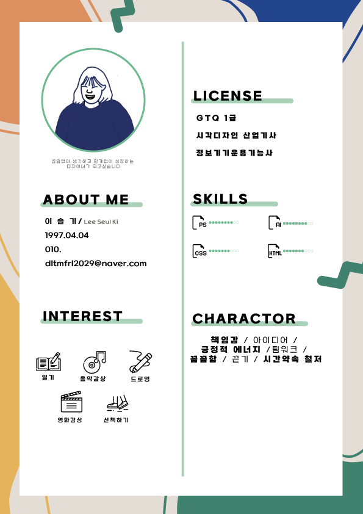

- Name : 이슬기
- Birth : 1997. 04. 04
- Address : 경기도 김포시 구래동
- Phone : 010-4098-4926
- Email : dltmfrl2029@naver.com
로딩중
An Keyoung Min
CHALLENGING PUBLISHER
한계없이 도전하는 웹퍼블리셔 이슬기 입니다.
참신하고 새로운 디자인에 대한 관심과 효율적인 시멘틱 웹사이트 구축을 위하여
늘 준비되어 있습니다.
스크롤바를 내리면 작품을 감상할 수 있습니다.
ABOUT ME
VISION
아직은 연약하고 부드러워 보이지만 그것을 발판삼아
무한한 발전을 하고, 나를 한계없이 이어나가는 모습을 추구하고 싶습니다.
조금은 느리지만 뒤로 가지 않으며 포기하지 않고 더욱
자신을 다잡으며 앞으로 나아가는 디자이너가 되고자 합니다.
끝없이 탐구하고 창의적으로 이끄는 사람이 되겠습니다.
HASH TAGS
#1 준비된 성실함
저는 한곳에서 3년이 넘는 시간동안 일을 한 경험이 있습니다.
일을 하는 동안 결근이나 지각이 없으며 끈기있게 일을 했습니다.
이런 저를 사람들 성실함의 아이콘이라고 붙여 주셨고,
그 수식어는 프로젝트나 어떠한 일을 하더라도 더욱 완벽한 결과물을 만들어 내는데 도움을 주었습니다.
#2 다양한 경험과 소통하는 마음가짐
여러번의 해외봉사는 평소 소심하고 낯가리는 저를 180˚ 바꾸는
좋은 경험이었습니다. 새로운 장소는 저에게 더 넓은 시야를 갖는
것에 도움을 주었습니다.
또 한 그곳에서 만난 사람들을 통해
유연한 사고로 소통하는 마음가짐을 얻게 되었습니다. 지금의
저는 단점을 극복하고 더욱 자신감을 갖고 앞으로 나아가게 되었습니다.
- ZenCoding(EMMET) & SCSS
- Javascript & jQuery 로직구현
- MVC 패턴의 페이지 구성
- 반응형 웹디자인
- HTML5 DTD 유효성 검사 통과
- 웹접근성을 향상시킨 시멘틱 페이지
WORK STYLE
- 구조와 디자인, 기능을 분리한 MVC패턴을 구현
- 자바스크립트와 jQuery를 구현
- HTML5 시멘틱과 CSS3 웹페이지를 구현
다른 사람이 말하는 나
-
지현
따뜻한 사람사람이 따똣하다 그리고 맡은 일에 책임감이 있고 꾸준한 사람이다.
-
유빈
단단한 사람목표가있으면 반드시 해낸다. 그리고 본인만의 단단함이 있고 계획적이진 않아도 추진력이 있다.
-
윤지
용기 있는 사람자기가 원하는 것을 찾아 다니는 용기쟁이이며 좋은것을 잘 아는 확실함이 있다.
Good~! Good~!
SKILL
탁월한 UX분석능력과 Emmet/Zencoding 활용
-
UX/UI 디자인
사용자의 Context와 Needs를 파악하고
Problem을 해결할 수 있는 Insight 도출 -
반응형 웹표준
시멘틱을 지향하는 HTML/CSS 작성능력 보유,
자바스크립트와 제이쿼리 기반의 로직 구현 가능
SASS 전처리기와 리액트 라이브러리 활용
-
Sass Preprocessor
협업 웹코딩의 필수 기술인 SCSS를 이용한
CSS 스타일링을 원활이 사용할 수 있습니다. -
반응형 웹표준
국내 프론트엔드 시장의 대세 리액트 코드구현,
자바스크립트와 제이쿼리 기반의 로직구현 가능
ABILITY
젠코딩
HTML5
CSS
jQuery
웹기획
디자인
95%
리더쉽
적극성
창조성
사교성
책임감
정직성
온라인 이력서
‘스타일을 창조하여 그것을 섬세한 디자인으로 탈바꿈 시키고싶다’ 는 마음으로
매일 노력하고 있습니다.
HTML5 & CSS3 시멘틱 페이지를 ZenCoding(EMMET)으로 코딩할 수 있습니다.
클라이언트의 요구사항을 적극적으로 반영하는 UI/UX 디자인 능력은 저의 최고의
장점중 하나입니다.
JS 플러그인을 사용에 그치지 않고 필요한 기능을 직접 구현할 수 있는 Javascript/jQuery 로직구현이 가능합니다.
새로운 코딩기법과 디자인을 배우는 것이 정말 즐겁습니다.

UX DESIGN
작품리스트
이전 다음내가 생각하는 사용자경험 - User Experience
UX의 정의에 대해서 알아보고, 다양한 UX의 사례들, 특히나 성공적인 UX라 불리는 사례들을 보면서
사용자 경험을 바탕으로 어떤 제품이나 서비스를 구축하는 것의 중요성을 깨달았다.
내가 생각하는 UX란, 사UX 디자인은
‘왜 이렇게 디자인 했는지’ 의도를 설명할 수 있는 디자인이라고 생각합니다.,
사용자가 겪는 문제를 정확하게 파악하고 분석하여 제품이나 서비스를 편리하게 이용할 수 있도록 하는 것이라고 생각합니다
사전적인 의미에서 UX란 사람의 여러 감각과 감정의 총합을 뜻하는데, 내가 생각하는 UX는 ‘불편함’이라는,
혹은 다르게 불릴 수도 있는 부정적인 감정을 최소화시키는 것이라는 생각이 든다.
서울시 버스 도착 알림 서비스

디자인과 UX의 차이
- 1. 사용하지 못하는 라켓
-
더 이상 사용하지 못하는 라켓을
거울로 업사이클링(Upcycling)한 사례
- 2. 물티슈 보호 캡
-
오염, 수분증발을 방지하는 물티슈 보호
캡을 콘센트 보호 덮개로 활용한 사례


PORTFOLIO
1. 빽다방 (리뉴얼 디자인)
PAIK’S COFFEE Renewal Design
기존 웹사이트의 개선사항을 찾아 메인페이지를 리뉴얼 디자인하였습니다.
빽다방의 컬러 아이덴티티를 사용하여 브랜드 이미지를 강조하였으며,
간결한 레이아웃으로 전달하고자 하는 내용을 보기 쉽게 배치하였습니다.
작업프로그램 : Photoshop, Visual Studio Code
100% 개인 작업


이삭토스트 (리뉴얼 디자인)
ISAAC TOAST Renewal Design
기존 웹사이트의 개선사항을 찾아 메인페이지를 리뉴얼 디자인하였습니다.
이삭토스트의 컬러 아이덴티티를 사용하여 브랜드 이미지를 강조하였으며,
간결한 레이아웃으로 전달하고자 하는 내용을 보기 쉽게 배치하였습니다.
작업프로그램 : Photoshop, Visual Studio Code
100% 개인 작업


단양 여행(추천여행지) 사이트 디자인
DANYAGN TRAVEL Site Design
4가지 카테고리로 나누어 단양의 대표적인 문화를 소개하는 원페이지
형식의 사이트를 제작하였습니다. 도담삼봉을 담은 로고마크를
디자인하였으며, 로고에 사용된 컬러를 적용하여 통일성을 주었습니다.
작업프로그램 : Photoshop, Illustrator, Visual Studio Code
100% 개인 작업


필요한 기능을 직접 javascript/jquery 로직 구현
‘스타일을 창조하여 그것을 섬세한 디자인으로 탈바꿈 시키고싶다’ 는 마음으로 매일 노력하고 있습니다.
HTML5 & CSS3 시멘틱 페이지를 SCSS, ZenCoding(EMMET)으로 작성할 수 있습니다.
클라이언트의 요구사항을 적극적으로 반영하는 UI/UX 디자인 능력은 저의 최고의 장점중 하나입니다.
JS 플러그인을 사용에 그치지 않고 필요한 기능을 직접 구현할 수 있는 Javascript/jQuery 로직구현이 가능합니다.
새로운 코딩기법과 디자인을 배우는 것이 정말 즐겁습니다.
for문과 다중 if문의 결합한 로직 구현
SASS, Emmet 활용
페이지 전체의 계층구조를 입체적으로 분석할 수 있는
실무형 코딩기법 Emmet을 사용할 수 있어 업무시간을 단축시킬 수 있을뿐 아니라,
유지보수도 더욱 쉽고 정확하게 처리할 수 있습니다.
SCSS의 가장 큰 장점인 변수와 Mixin 기능을 적극 활용하여
CSS 스타일링을 할 수 있습니다.
Sprite-Image와 IR(Image Replacement)기법에 능숙
id, class를 남발하지 않고 원하는 요소를 셀렉팅할 수 있는 능력,
CSS3 Transform, Transition, Keyframes을 이용한 애니메이션 효과 구현
직접 구현한 슬라이드
-
좌우이동 슬라이드
슬라이드 구현에 적합한 ul,li,a 태그와 flxe를 사용하여 UI를 구현하였습니다.
슬라이드 보기
또한 자바스크립트로 position의 lef값을 동적으로 변화시켜 이동하도록 하였습니다. 플러그인 없이 직접 구현하였습니다.
-
무한 슬라이드
이전, 다음 기능을 가진 업그레이드 된 슬라이드로서 사용자 편의성을 향상되었습니다. 제이쿼리의 fadeIn(), fadeOut() API를 이용하여 코드를 구현하였습니다. 플러그인 없이 직접 구현하였습니다.
슬라이드 보기
-
자동실행 슬라이드
시작, 정지기능이 장착된 슬라이드로서 일관성있게 한쪽 방향에서 다음 슬라이드가 노출되는 기능을 append() API와 콜백함수의 개념을 접목하여 구현하였습니다. 플러그인 없이 직접 구현하였습니다.
슬라이드 보기
CONTACT
귀사에 입사를 지원합니다.
저의 웹퍼블리싱 이야기 입니다.
질문을 선택하시면 정리된 답변을 보실수 있습니다.
- 1. html5의 가장 큰 특징은 무엇일까요? 화살표
-
답변내용
- 2. 웹표준, 웹접근성, 시멘틱웹에 대해 설명해 주세요. 화살표
-
답변내용
- 3. 자바스크립트 라이브러리 사용시 가장 큰 장점은? 화살표
-
답변내용
- 4. .setInterval() 함수에 대해 설명하시오. 화살표
-
답변내용
- 5. CSS 미디어쿼리는 어떤 역할을 수행하는지 답하시오~! 화살표
-
답변내용
더욱 궁금하신 점은 면접시 말씀드리겠습니다. 감사합니다~!
본 페이지는 저의 개인 포트폴리오용으로 제작되었으며, 상업적인 목적과 관련이 없음을 알려드립니다.